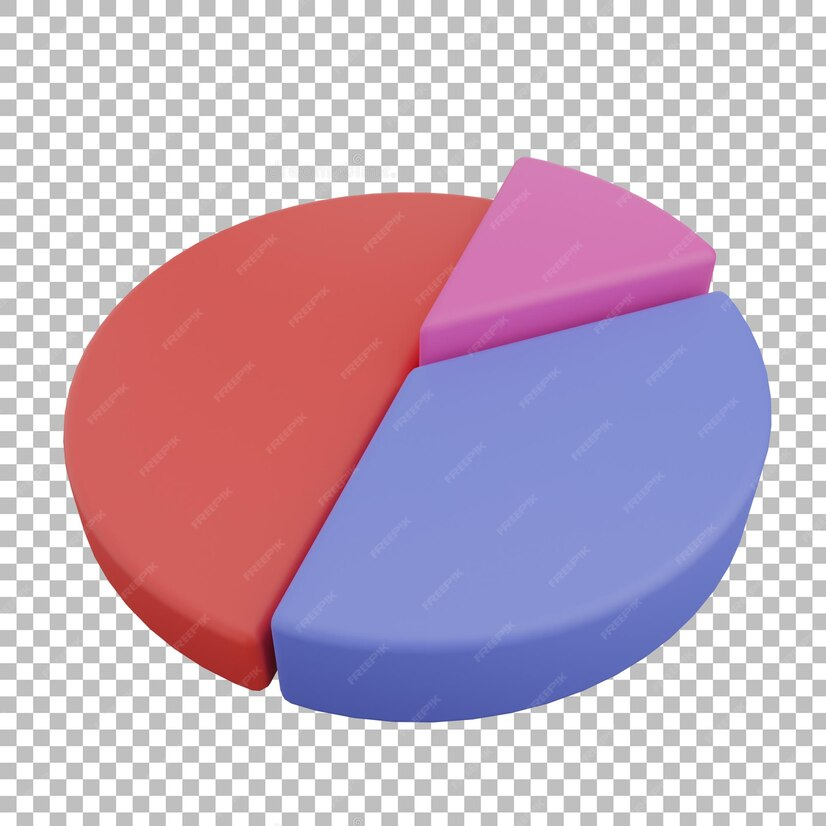

O nas
Jesteśmy uczniami szkoły ZST Puławy. Przeprowadziliśmy badanie ankietowe na temat czytelnictwa wśród uczniów naszej szkoły. Zrobiliśmy to w celu sprawdzenia czy nasze pokolenie w dobie Internetu wciąż sięga po literaturę
O projekcie
Wybraliśmy ten temat, ponieważ uważamy, że rozgłos czytelnictwa mógłby doprowadzić do większego zainteresowania książkami wśród młodych ludzi (i nie tylko), a co za tym idzie, czerpanie wielu korzyści z czytania.
O ankiecie
Ankietę stworzyliśmy w formie elektronicznej, za pomocą formularza Google. Wzięło w niej udział ... uczniów.
Pierwsze pytanie - najbardziej podstawowe jakie zadaliśmy, to czy uczniowie lubią czytać książki
Dla większości książki są obojętne ...bla bla